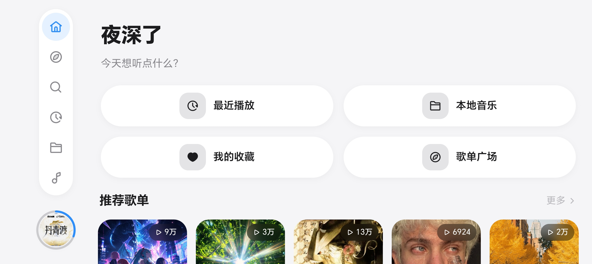
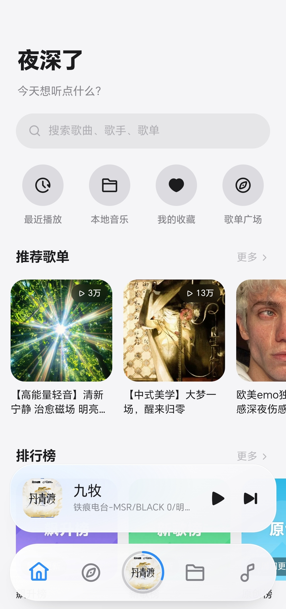

竖屏，
单手刚刚好。
常用入口落在拇指舒适区，歌单、搜索与播放控制自然触手可及。

克制的界面，自然的动效，丰富的播放能力。
让每一次触碰都有回应，也让内容始终是主角。
常用入口落在拇指舒适区，歌单、搜索与播放控制自然触手可及。
导航与内容重新排布，不只是旋转画面，而是为宽屏重新组织每一次浏览。
相同的色彩、圆角与内容层级，在不同方向里保持一致而熟悉的体验。

强大的能力，不必以复杂为代价。
沿用插件化体系，不绑定固定曲库。按自己的需求配置，让播放器真正适合你。
逐字高亮与可配置翻译，让每一段旋律更近一步。
从清新浅色到沉浸深色，始终舒适。
均衡器、响度均衡、变速与立体声扩展，让声音更贴近你的偏好。
按需导出音频与歌词，并将标题、歌手、专辑和封面标签一同保留。
长列表虚拟化、封面预加载与合成层动效，把资源留给真正重要的体验。
从歌词、翻译到声音与性能，五处细节，让每一次聆听更完整。
逐字高亮跟随演唱自然推进，原文与译文也能并肩呈现。
均衡器、响度均衡、变速与立体声扩展，找到更贴近你的听感。
原文与 AI 译文并肩呈现，让不同语言的表达同样清晰。
导出音频与歌词，并保留标题、歌手、专辑和封面标签。
搜索歌曲、歌手与专辑，让每一次想听都更快有回应。
拖动、点击或用方向键，在光影之间浏览你的音乐世界。
拖动封面，或使用左右方向键
歌单封面与信息来自所提供的示例数据，仅用于产品界面展示。
加入 SuchMusic 官方交流群，获取版本动态、使用帮助，也欢迎分享你的想法与反馈。
从下载到音源配置，把选择权和主动权都交给你。
前往 GitHub Releases 下载最新安装包。社区版适用于 Android 7.0 及以上设备。
前往下载按自己的需求配置音乐插件。应用不内置曲库，也不直接提供版权音乐内容。
了解音源说明收藏歌单、调整声音、转动屏幕，让界面与播放方式跟随你的使用习惯。
回顾双形态设计开放，从第一天开始。你可以阅读源码、反馈问题，或带着自己的想法参与共建。
查看社区仓库SuchMusic 是播放工具与插件框架，不存储、不直接提供版权音乐内容，支持 LX 音源插件。音源来自你自行配置的插件与公开接口，请遵守当地法律法规并支持正版音乐。
社区版面向 Android 7.0 及以上设备。官网仅展示社区版移动端体验，不提供应用内功能的在线试用。
自行构建的开源版本需要配置受支持的 AI 服务密钥后使用；我们发布的安装包已预先完成配置，下载安装后即可直接使用，无需再次配置。其他播放与歌词功能不受 AI 配置影响。
你可以通过 GitHub 阅读源码、提交问题或贡献代码。衍生与分发请遵循 AGPL-3.0，并保留原项目及社区版的版权信息。
下载 SuchMusic 社区版，让音乐以更自在的方式发生。
前往 Releases 下载适用于 Android 7.0 及以上 · 音源需自行配置